05-1화성시 공모전 「여긴, 화성」
타격하는 박에만, 잉크 프레임
 효과 직전
효과 직전약 0.4초만(최종본 기준) · 실사 → 형광 잉크 판화 · 같은 효과 반복 ✗
Codex + LLM Wiki → 언젠가 기획 안 해도 되게
제 창의성체감
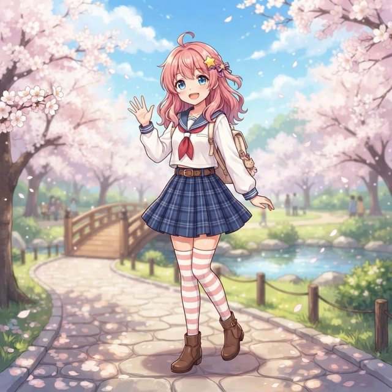
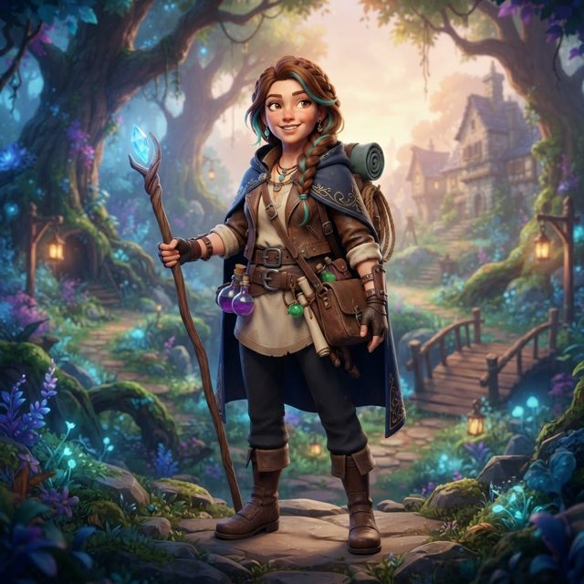
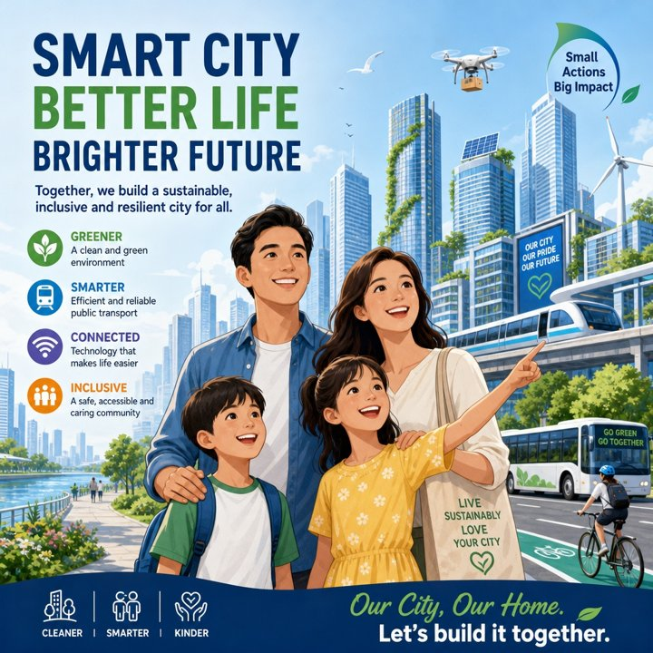
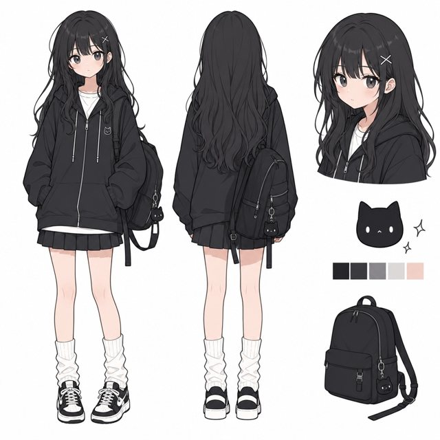
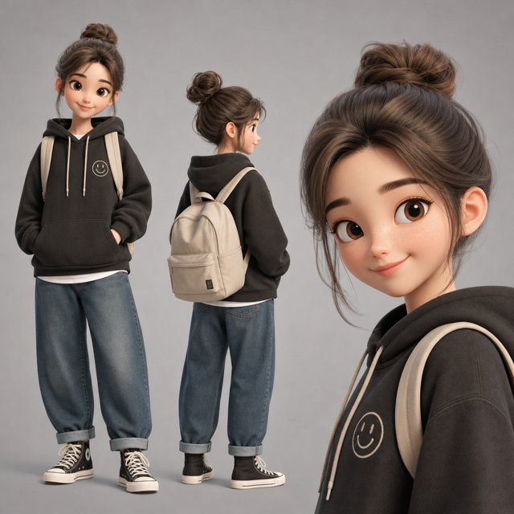
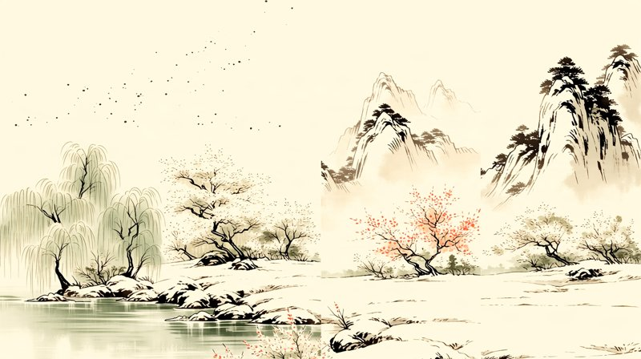
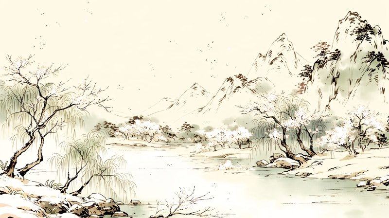
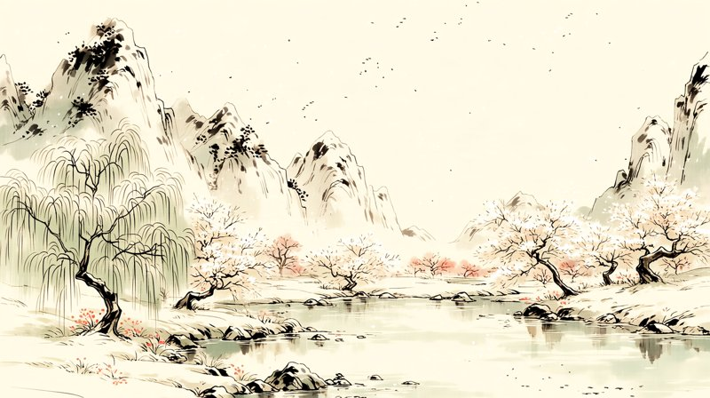
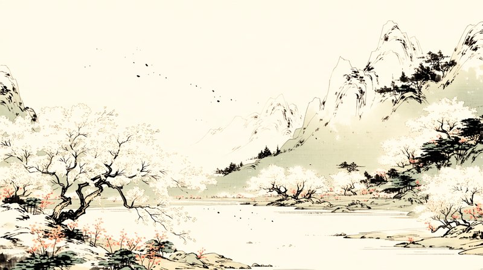
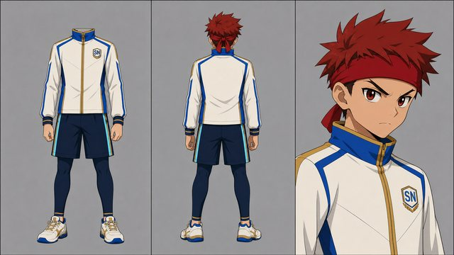
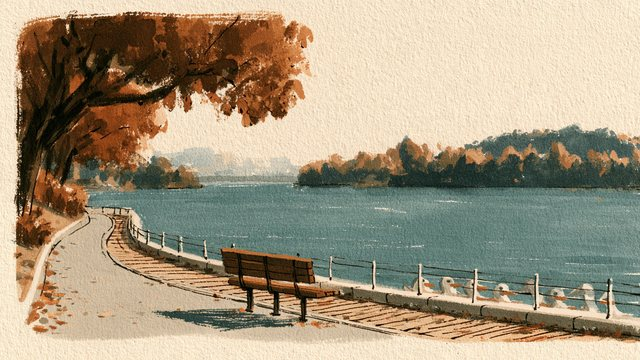
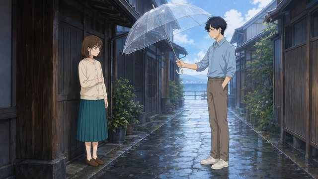
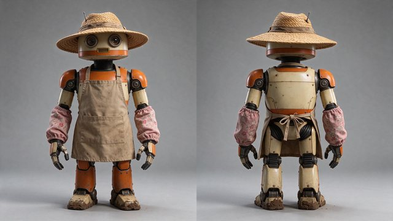
영상에 이상한 물건이 계속 나오면,
프롬프트보다 참조 그림부터 봅니다.
 종이 여백
종이 여백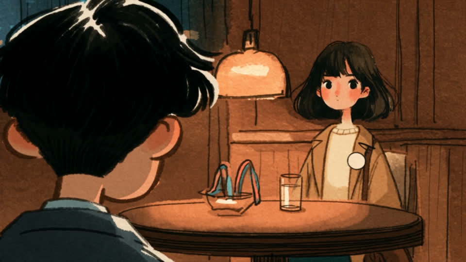
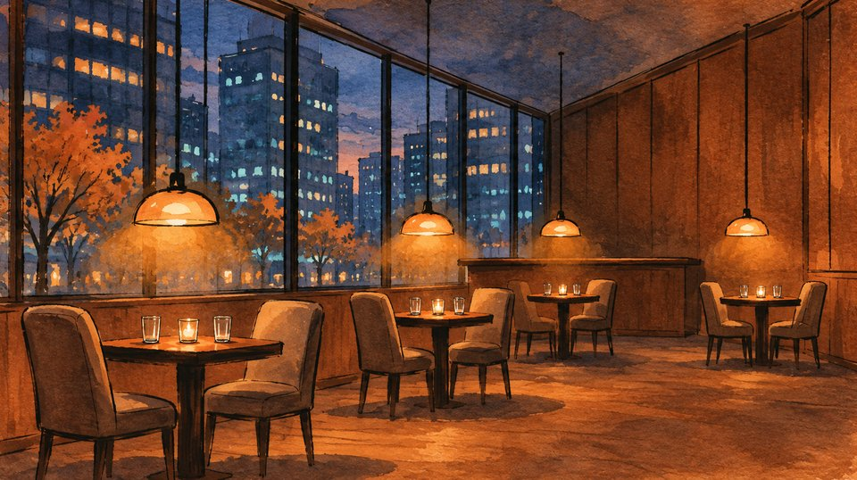
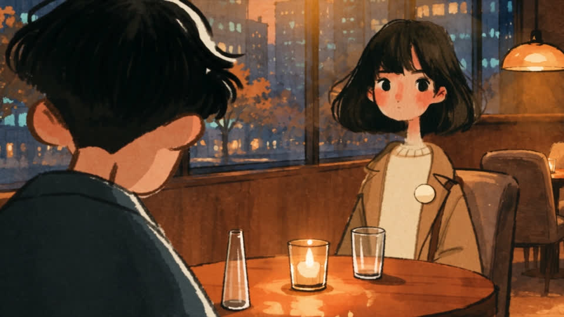

여기선 장소만
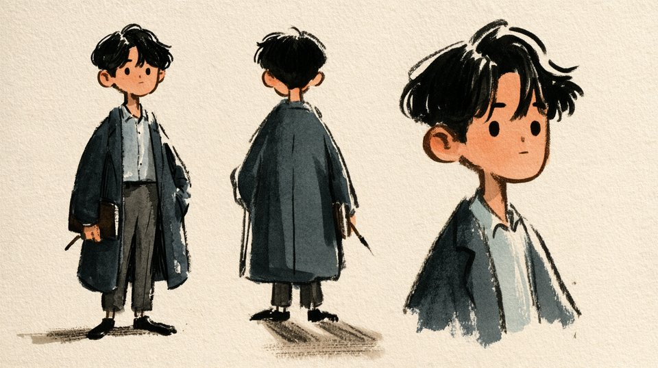
인물 시트 = 얼굴·옷만
종이 배경·3면 배치 제외

The reeds lean in one slow wave of wind; his coat hem lifts a beat after; his shoulders rise and sink with one slow breath and he stays still.갈대 눕고 → 코트 자락 → 숨 한 번 → 멈춤


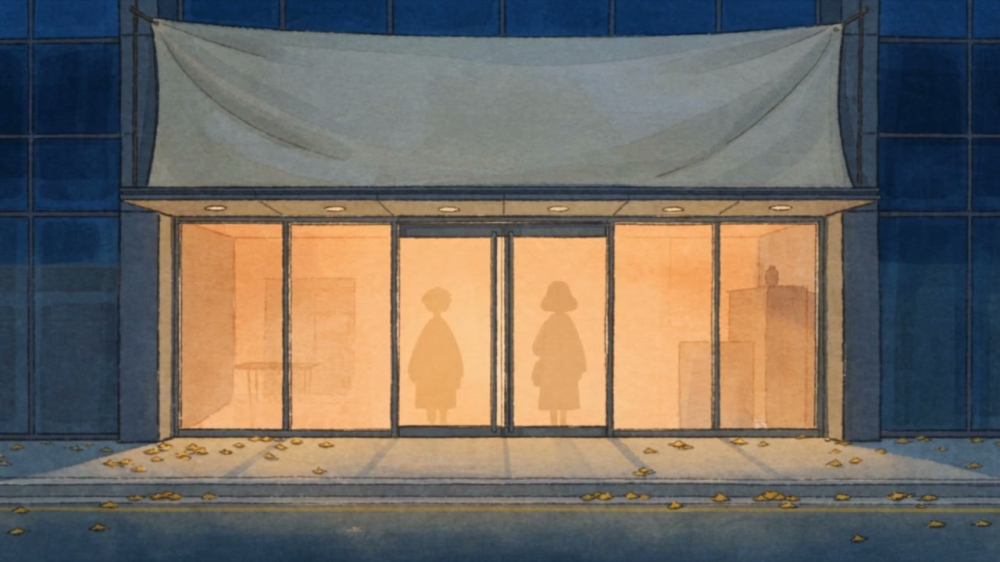
현수막 = 글자 없는 빈 천
효과 직전약 0.4초만(최종본 기준) · 실사 → 형광 잉크 판화 · 같은 효과 반복 ✗
“관찰 지점 No.01” 카드 · 어디인지 화면이 말함
4K 확대 + 그레인 · 두 그림 모두 최종본 프레임
 카드 등장
카드 등장 생성 원본
생성 원본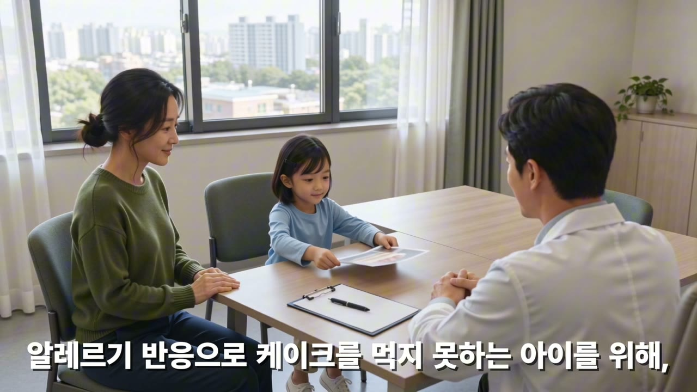
자막 얹음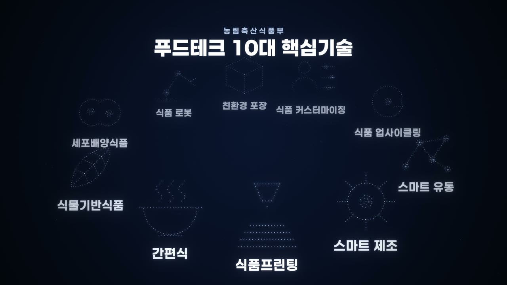
설명 그래픽틀리면 안 되는 정보(기술명 · 지도 · 로고) = AI에게 안 그리게
AI 글자는 깨짐 → 빈 현수막으로 생성 → 글자는 천 위에 합성
내려오는 움직임이 컷을 넘어 이어짐 → 장면이 바뀌어도 눈이 끊기지 않음
세 안 중 하나를 고름확정: 고른 안을 말한 원문 그대로화풍 · 인물 · 장소를 글로 고정확정: 형식 검사 통과Suno 생성 → 내가 선택확정: 고른 음원 등록15초 단위로 장면 설계확정: 승인한 원문 그대로| 한 줄 줄거리 | 한 문장 — 누가, 무엇을 원하고, 무엇이 막고, 무엇이 바뀌나 |
| 감정 곡선 | 첫 0–3초에 잡기 · 쌓기 · 정점 (기억될 한 장면) · 마무리 (페이드 말고 해소) |
| 차별점 | 공모 주제의 뻔한 버전이 아닌 이유 |
| 피할 것 | 클리셰 · 사실 위험 · 거절된 룩 |
| 매체 · 화면비 · 길이 | 2D · 3D · 실사 · 혼합 / 16:9 / 60초 ≈ 15초 블록 4개 (계획 단위 — 실제 생성 횟수와는 다름) |
앞 단계가 바뀌면 뒤 단계의 확정을 다시 확인 — 단, 생성 전 묶음은 15초 구간별로 봅니다. 입력이 바뀐 구간만 다시 확정하고, 그대로인 구간의 확정과 결과는 유지(11-11부터). 화풍 고정 문장이 바뀌면 전 구간, 인물 고정 설명이 바뀌면 그 인물이 나오는 구간만
고칠 때는 같은 문서를 고쳐 다시 확정, 이전본은 따로 보관
제작 단계에서 프롬프트를 새로 쓰지 않음 — 그 내용을 정한 단계로 돌아감
영상 종류: 뮤직비디오 · 공모전 · 관광 · 기관 홍보 · 숏폼
| 항목 | 내용 |
|---|---|
| 색 팔레트 | HEX 값으로 |
| 빛 | 광원 방향·질 · 시간대 · 실제 조명 · 대비 — 레시피 하나 |
| 질감 | 그레인 · 선 · 재질 · 렌더 방식 |
| 렌즈 문법 | 기본 화각대 · 심도 · 카메라 움직임의 느낌 |
| 금지할 룩 | 거절할 구체적 룩 |
| 화풍 고정 문장style_block_en | 영어 600자 이하 — 매체·렌더·팔레트·빛·질감·렌즈. 장면 내용은 넣지 않음 |
| 인물 고정 설명identity_block_en | 영어 350자 이하 — 얼굴·머리·체형·의상·나이감. 표정·행동은 넣지 않음 + 인물 시트 참조 연결 |
| 장소 | 구조 · 재질 · 광원 · 고정 랜드마크 |
| 해상도 | 720p · 1080p |
화풍 고정 문장모든 영상 프롬프트 맨 앞에 원문 그대로 — 입력 검사가 일치를 확인
인물 고정 설명그다음 문단에 원문 그대로
인물 시트 참조03 이미지의 인물 시트로 연결
색 팔레트이미지 프롬프트 색 항목의 HEX
금지할 룩프롬프트 · 검수의 거절 기준
| 길이 | 프로젝트에서 확정한 길이와 같아야 함 (기본 15초) |
| 역할 | 이야기·음악 구간에서 이 블록이 하는 일 |
| 소리 | 무음 · 현장음 · 대사 · 음악 참조 |
| 인물 · 장소 | 등장 인물 · 장소 |
| 붙일 참조 | 붙일 참조 이미지 |
| 마지막 구도 | 다음 생성이 이어받는 마지막 그림 |
| 확인할 오류 | 얼굴 · 텍스처 · 폰 화면 등 위험 속성 |
모델을 Seedance 2.5로 적으면 2.5 규격, 안 적으면 2.0
| 시간 구간 | 빈틈 없이 이어지는 초 구간 |
| 숏 크기 | 정해진 목록 9종 (extreme wide ~ insert) |
| 앵글 | 정해진 목록 10종 (eye level · low · overhead · pov …) |
| 카메라 움직임 | 정해진 목록 24종 (static · slow push in · tracking · orbit · fpv …) |
| 렌즈 · 구도 | 화각 · 화면 안 위치와 전경/배경 층 |
| 동작 | 시작 → 행동 → 보이는 반응 |
| 꼭 지킬 내용 | 프롬프트까지 살아남아야 할 구절 |
| 근거 대사 | 근거 대사 — 장면은 대사 그대로 (인서트는 따로 표시) |
숏 5: “입구 위 글자 없는 긴 크림 천 현수막 … (후반 ‘솔로몬의 선택’ 합성 자리)” → 04 · 05-4
검색 — 장르·무드·용도·그루브·악기·보컬·BPM·형식으로 색인 + 관련 1–3개만
추출 — 가까운 패턴 2–5개에서 변수만
정리 — 아티스트·곡 이름 제거, 묘사어로 대체
조합 — 프롬프트 하나
변형 — 변수 몇 개만 바꾼 1개
기록 — 참고한 파일 이름
BGM 길이: Simple 대신 Custom, Duration을 초로 입력 — 목표값일 뿐
보컬: 한 명의 안정된 한국어 보컬, 자연스러운 발음·호흡
perfect · crystalline · ethereal 같은 형용사 나열 금지
인스트 인트로엔 허밍·속삭임 금지를 명시
고르기 · 다운로드는 내가 직접
| 항목 | 내용 | 분량 |
|---|---|---|
| 1 장면Scene | 누가 · 무엇이 · 어디서 · 무엇을 — 핵심을 맨 앞에 | 60–120어 |
| 2 카메라Camera | 시점 · 거리 · 렌즈 성격 (결과로 서술) | 15–30어 |
| 3 빛Lighting | 방향 · soft/hard · 그림자 · 림 (장비명 금지) | 10–25어 |
| 4 색Color | 팔레트 + 색온도 + HEX 3–5개 | 10–20어 |
| 5 질감Texture | 매체 · 질감 · 표면 반응 | 10–20어 |
| 6 글자Text | (선택) 따옴표 카피 · 폰트 · 위치 | 0–25어 |
| 끝 | AR x:y 토큰 하나 |
포맷 B (단독 인물 화보): 피사체 → 얼굴 → 헤어 → 장르 → 장면·포즈 → 의상 → 구도 → 조명 → HEX → 질감 → AR, 350–450자 한 문단
장면에서 뺄 것은 부정문 대신 긍정형으로 다시 쓰기 — gpt-image-2는 장면 부정어를 오히려 그림. 예외: 글자를 넣을 때 중복·유령 글자를 막는 정해진 문구
masterpiece · 8k · best quality 같은 옛 어휘 금지
카메라·조명 장비명 대신 결과 ("배경이 부드럽게 흐려짐")
수치는 박는다 — HEX · 켈빈 · key:fill 1:2
1줄 = 1컷 = 1호출, 그리드 금지
이상적 피부 대신 natural skin texture · visible pores · film grain
참조 1 = 프롬프트 1 = 이미지 1 — 그리드·연락 시트 금지
반복 인물은 승인된 인물 시트를 먼저, 생성 때 실제 첨부
Seedream 인물 시트: 2패널(정면 · 뒷모습 전신, 높이 85%)
장소 참조에 소품 · 종이 여백 금지 — 영상으로 번진다
실제 장비 · 장소는 위키미디어 Commons 실사진을 Seedream 입력으로
시작프레임 · 스타일프레임은 만들지 않음 (10-29~)
승인된 참조가 충분하면 새 이미지가 0장이어도 됩니다 — 부족한 것만 보탭니다
| 작풍 잠금 | 계획된 매체와 다른 화풍이 섞이면 탈락 |
| 정체성 | 얼굴 윤곽 · 눈 간격 · 코 · 턱 · 머리 볼륨 · 나이감 |
| 역할 분리 | 같은 화면의 조연과 구분되는가 |
| 물리 | 폰 화면 방향 · 손 · 목 연결 |
| 이야기 기능 | 정지 포스터가 아닌 원인 → 반응 |
| 동작 상태 | 던지기·변형은 단계별로 분리 |
지금 기본 방식은 컷별 시작 이미지를 만들지 않습니다. 컷의 구도 · 동작 · 시간 진행은 영상 프롬프트가 맡고, 실제로 일어났는지는 영상 검수(04-B)에서 봅니다.
~07-03Claude · ChatGPT 웹에서 프롬프트 작성 → ChatGPT Image 2
07-06Codex imagegen (gpt-image-2)이 기본 경로
07-12공냥 키트를 모든 이미지 프롬프트의 기본 층으로
11-07Midjourney 사용 (공개 갤러리 허용)
11-10배분 확정 — 수묵·회화 = Midjourney, 사람·깔끔한 실사 = Seedream
| 용도 | 도구 | 비고 |
|---|---|---|
| 2D · 3D · 수묵 · 회화 | Midjourney | 작풍 참조 |
| 실사 · 인물 · 실제 장소·장비 | Seedream 5.5 Pro | 실사진을 입력으로 |
| 일본풍 2D 캐릭터 | 여러 모델 비교 | Grok Imagine · Midjourney · Kling · 나노바나나 · GPT |
| 포스터 · 도감 · 인포그래픽 | gpt-image-2 | 공냥 키트 포맷 A |
생성은 이미지 전용 AI 세션이 실행하고, 결과는 프로젝트에 등록한 뒤 검수합니다.
| 길이와 숏 수15초를 다 씀 — 프롬프트 사정으로 줄이지 않음 |
| 화풍 고정 문장스타일 바이블 원문 그대로, 모든 생성에 반복 |
| 인물 고정 설명승인한 설명 원문 그대로 |
| 참조 하나에 역할 하나"분위기용" 같은 느슨한 역할 금지 |
| 누가 · 어디서 · 무엇이 일어나나 한 문장 |
| 숏마다 크기 · 앵글 · 움직임 · 렌즈그다음은 형용사 대신 보이는 사건 |
| 동작은 순서로늦추고 → 멈추고 → 챙긴다 (숏 3) |
| 현장음만음악 · 자막은 후처리 |
| 인물 특징 다시 적기긴 테이크 흔들림 방지 |
| 마지막 구도다음 생성이 이어받음 |
모델 입력은 영어만 · Runway 입력 10,000자 이하 · 길이를 맞추려고 내용을 압축하지 않음
지식 33개 중 필요한 섹션만
기본값: 배포 런타임 6섹션 · 9,000자
수정 중인 로컬 소스 11 · 14,000요약 · 프롬프트 · 설정
참조 목록영어 · 10,000자 이하
숏 시간 표기 · 참조 번호13가지 → 04-C2.0 ≤ 15초
2.5 ≤ 30초 · 1–8숏입력이 바뀌면 다시 확정내가 실행 승인 1회실행 승인 뒤 제출 · 내려받기정상 속도 재생 · 접촉/전환 구간 느리게 · 소리 확인
+ 1초 1장 시트 · 사람 컷 확대| 생성이 끝나거나 멈추는 경우 | |
|---|---|
| 정상 종료 | 전부 내려받음, 또는 아직 실행 승인 전 — 내려받았다고 검수가 끝난 것은 아님 |
| 확인 필요 | 내가 확인해야 다음으로 |
| 실패 | 생성 실패·유실 · 실행 거부 · 세션 수 상한 — 다시 생성하기 전에 이미 제출됐는지부터 확인(중복 생성 방지) · 복구는 같은 세션, 같은 자리에서 이어서 |
| 검수에서 보는 것 | |
|---|---|
| 움직임 · 소리 | 정상 속도로 재생 · 접촉·전환은 느리게 · 소리 |
| 필요한 일 | 필요한 일이 실제로 일어났나 — 주인공 유지 · 행동이 빠지지 않았나 |
| 글자 · 얼굴 | 옷 · 등판 · 소품 위 깨진 글자 · 서양인 얼굴 · 이상한 헤어 |
| 시선 · 손 | 장비를 보는가, 손 논리 |
| 교체 | 같은 클립의 무인 구간·클로즈업으로 — 그 구간이 장면의 역할을 하는지 따로 검수 · 거절된 클립 자체는 해결 전까지 보류 |
| 프롬프트에 쓴 것 | 실제로 나온 것 |
|---|---|
| "매끈한 피부"smooth skin | 플라스틱 같은 AI 피부 |
| 글자가 있을 법한 소품 · 옷 | 깨진 글자, 가짜 한자 · 숫자 |
| "화면은 비어 있다" | 그 말이 오히려 화면을 불러냄 |
| 한국 단서가 없는 사무실 | 외국 스톡 영상 같은 사무실 |
| 장소 참조 그림 속 소품 · 종이 여백 | 영상에 그대로 번짐 |
그 밖에 2가지: 화면 내용 묘사 → 가짜 UI 글자 · 콧줄 묘사 → 산소 캐뉼라로 오인
시작 장면 이미지는 만들지 않음
요청하지 않은 자막 · 지명 타이틀 · 라벨 금지
과한 액션 줄이기 (손그림 작업에서) · 거절한 클리셰 금지
자연 × AI 억지 비유 금지
이 13가지 문구를 프롬프트를 쓰는 단계에서 자동으로 찾아 경고합니다. 의도한 예외는 그 장면에만 허용합니다. 경고를 통과했다고 좋은 영상이 보장되지는 않습니다 — 같은 실수를 두 번 하지 않기 위한 장치입니다.
규칙에는 적용 조건이 있습니다. "과한 액션 줄이기"는 손그림(잉크·수채) 작업에서 나온 교훈입니다. 한 작품에서 거절한 표현을 모든 작품의 금지로 만들지 않고, 다른 장르에서는 경고를 보고 판단합니다.
| 항목 | Seedance 2.0 | Seedance 2.5 |
|---|---|---|
| 길이 | 5–15초 | 5–30초 (우리 런타임 기준 · Unlimited는 15초·720p) |
| 숏 수 | 최대 4 | 1–8 |
| 참조 | 번호로 지정 | 우리 런타임 한도 12장 |
| 프롬프트 형식 | 흐르는 서술 | 라벨 블록 (04-A) |
| 카메라 | 숏당 무브 하나 | 4초 넘는 비트 안 복합 무브 |
| 선택 | 기본 | 사용자가 명시할 때 |
숏 수·참조 장수는 우리 런타임의 검사 한도입니다(모델 사양과 다를 수 있음).
경로: Runway 웹 화면 · Grok은 시작 이미지 방식 전용
~07컷마다 시작 이미지를 만들어 영상으로
07-11시작 이미지 없는 방식 추가 — 참조만 붙이고 연출은 프롬프트가
10-29시작프레임 없이 참조만이 기본
11-07Seedance 2.5 지원
11-11반복 실수 검사 추가
| 작업 | 방법 | 기준 |
|---|---|---|
| 색보정 | Python · ffmpeg 스크립트 | 과한 부분부터 줄이기 · 컷 사이 톤 맞추기 |
| 정보 라벨 | 코드 오버레이 | 요청한 글자만 — 지명 타이틀 임의 삽입 금지 |
| 가사 자막 | demucs 보컬 분리 + Whisper | 보컬 시작 0.1초 전 · Noto Sans KR Bold |
| 효과 (승인) | 효과 모음 | 접촉 스파크 · 타이포 임팩트 1–3프레임 · 잉크 작화 약 0.4초(최종본 기준) · 공간 전환 |
| 효과 (거절) | 얇은 HUD · 흐림·번짐 · 도형 오버레이 · 입술 마스크 · 같은 효과 반복 | |
| 합성 | 곱하기 합성 | 빈 현수막 천 위에 글자 (05-4) |
| 업스케일 | Real-ESRGAN animevideov3 ×2 | + lanczos 블렌드 · 그레인 → 4K |
| 설명 그래픽 | 코드 · Blender · ffmpeg | 480p 미리보기 먼저 · 공공 톤 남색·금색 |
| 정지 화면 검사 | ffmpeg | 렌더마다 |
| 누가 | 내가 직접 — CapCut 자동 편집은 10-16 중단 |
| AI 역할 | 장면을 계속 뽑고 원본을 바로 띄움 · 편집안은 요청 때만 |
| 길이 부족 | 정지 · 슬로모션 · 확대 이동 효과 대신 이미 뽑은 다른 테이크 |
| 검사 | 정지 화면 검사 — 렌더마다 |
| 미리보기 | 전 구간 480p 먼저, 확정 후 고해상도 |
| 파일 | 편집물은 프로젝트 소재 폴더 밖 별도 폴더에 |
| 보관 | 진행 중 로컬 · 완료본 SSD |
소재 폴더에 등록되지 않은 파일이 섞이면 소재 점검이 실패해 이미지 검수 · 영상 생성 단계가 멈춘다.
원문은 그대로 두고, 검증·요약한 지식 페이지로 컴파일한다(Karpathy식 LLM Wiki). Codex와 Claude가 같은 위키를 읽고 쓴다. 압축·인계 직전에 캡슐을 남기고, 재사용할 교훈만 지식 페이지·시드·메모리로 옮긴다.
실사 인물 프롬프트에 smooth skin이라고 쓴 결과에 대한 내 판정규칙과 이유를 적어 둠 — 대신 모공 · 35mm · 그레인같은 문구를 찾는 규칙 추가 — 영상 · 이미지 프롬프트실사 항목에 올림 — 실사 장면마다 함께 전달같은 문구를 쓰면 쓰는 단계에서 경고이런 규칙이 지금 13가지 → 04-C
좋았던 결과 모으기 — Runway에서 하트를 누른 결과의 프롬프트를 프로젝트 마감 때 한 번 읽어 모으는 경로. 만들어 두었고 아직 수집 0건입니다. 위 사례와는 별개입니다.
| 실제 자료 | 실제 작업물 · 발췌·크기 조정만, 합성·보정 없음 |
| 예시 | 설명하려고 그린 도식과 숫자. 잰 값이 아닙니다 |
| 체감 | 발표자의 체감. 조사 수치가 아닙니다 |
부록의 규칙과 한도는 그렇게 하도록 적어 둔 것의 기록입니다. 모든 작품에 적용됐다거나 품질이 좋아졌다는 증거는 아닙니다.
| 01 기획 | 95 : 5는 발표자의 체감입니다 |
| 03 이미지 | 85%는 발표자의 체감입니다. 왼쪽 네 장은 한 줄로 뽑은 예시 |
| △1 | 30씬 → 40씬, 6씬 → 8씬은 예시 숫자. 음파는 실제 곡의 바탕 모양만, 하이햇 자리와 장면 나누기는 그린 예시. 음악 때문에 바뀐 실제 콘티 기록은 싣지 못했습니다 |
| 02 · 06 | 02 음파는 △1과 같은 그림(예시). 06 편집 타임라인은 도식(예시). 02의 20초 음원은 실제 곡 |
| 04 저작 모델 | Codex → Astra → Claude 변천과 “원하는 바 이상”은 발표자의 체감입니다 |
| 05-1 · 05-2 | 원본이 로컬에 없어 최종본의 효과 직전·효과 순간을 나란히 둠(원본 대조 아님). 약 0.4초는 최종본 클립에서 프레임을 센 값(약 11프레임) |
| 04-B · 04-D | 숏 수·참조 장수는 우리 런타임의 검사 한도(모델 사양과 다를 수 있음). 위키 발췌 한도는 실행본·소스·프로젝트 설정마다 다를 수 있음 |